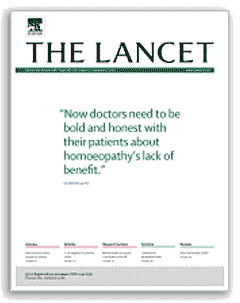

Samuel Hahnemann
 What is homeopathy?
What is homeopathy?
 Published evidence for and against homeopathy
Published evidence for and against homeopathy
 Homeopathic solutions
Homeopathic solutions
 Does homeopathy work?
Does homeopathy work?
 The placebo effect
The placebo effect
"The greatest enemy of knowledge is not ignorance,
it is the illusion of knowledge" Stephen Hawking
Homeopathy is a branch of alternative medicine, b,i created in 1796 by the disillusioned doctor Samuel Hahnemann. It is based on the surmise that an individual may be treated using minute dosesd of natural materials which in larger doses would be expected to cause the same symptoms (the 'like cures like' principle). h Remedies start with such a natural material that is diluted and then subjected to a sequence of further dilutions in purified water or aqueous ethanol with considerable agitation (called succussion, see below) between dilution steps. Each dilution (as shown) results in about a 100-fold dilution, and many cycles (e.g., 20, 50, 200) are performed before the remedy is used. a, g
The initial popularity of homeopathy was partially due to the unhygienic crudeness of medical procedures in the 19th century, such as bloodletting. However, 200 years later, homeopathy is still gaining popularity, even if its efficacy is often disputed. The cornerstone of homeopathy that the whole clinical picture is considered, on an individual basis with generally lengthy consultations, is not in dispute. Consideration of the 'whole' person is becoming more important as information concerning an individual's genome becomes clearer. However, criticism is leveled at homeopathic 'drugs', particularly as it appears to be 'just water'. Belief in whether or not dilution and shaking can have any
effect on the health benefits of water (for an overview of homeopathy see for example, [484a], for a review of homeopathy research see [484b] and for a debate concerning homeopathy see [1363])
depends on the presence of an acceptable working hypothesis for the mode
of action (see also magnetic effects) of such shaken and overly diluted material. Indeed, a confounding aspect of examining the efficacy of homeopathic treatments seems to be the highly variable nature of supposedly similar homeopathic remedies from different manufacturing sources. [Back to Top  ]
]
Despite many (most?) people knowing of success stories (and the opposite) concerning the use of homeopathy where it is practiced [120], scientists have difficulty in regarding this form of alternative medicine as any more than a placebo effect. e Analysis of the literature has shown that there is little difference on average between the homeopathic effects and those of a placebo [3743]. This, however, does not prove that the two effects are identical in any or all cases. The ‘memory of water’ is a popular phrase primarily associated with homeopathy [1211] following his and others’ allergy research work [132]. These research teams reported that solutes subjected to sequential physical processing and dilution show biological effects different from those apparent using just the water employed for the dilutions. The topic has drawn much controversy, with many 'scientists' siadly rejecting it outright without any study of the evidence; this 'confirmation bias' is a well-established phenomenon where evidence that supports pre-existing beliefs is readily accepted, whereas evidence that undermines pre-existing beliefs is readily discarded. Whether or not this work is correctly interpreted, the value of homeopathy depends on whether it can treat ailments, not on whether water has 'memory'.
Meta-analysis of 89 placebo-controlled trials failed to prove either that homeopathy was efficacious for any single clinical condition or that its positive clinical effects could entirely be due to a placebo effect [121a], thus leaving the scientific door open both ways. However, further analysis of this data indicated that some of these studies may have failed to avoid bias and that studies using better methodology yielded the less favorable effects [121b]. An analytical review has reinforced the more pessimistic view concerning the clinical effectiveness of homeopathic remedies [527]. Further, a quality assessment of published experiments on homeopathic preparations has concluded that many were performed with inadequate controls [651]. Although a scientific trial of homeopathy conducted for the BBC and similar work reported on ABC News' 20/20 program both failed to show any homeopathic effect, the experiments they reported have been subject to severe criticism, including that of careless scientific methodology and faulty protocols. 
In August 2005 [840], the medical journal 'The Lancet' controversially argued for halting any further research into homeopathy, concluding it has no effect other than as a placebo. This judgment was based on its simultaneous publication of a comparative study of 110 matched placebo-controlled trials of homeopathy and conventional medicine [841]. However, the conclusion was reached despite the study showing little evidence of differences between the two groups (homeopathy and conventional) when all the data was considered. There were differences when a tiny percentage of unmatched more extensive trials were cherry-picked (unscientifically chosen as best fitting the prior hypothesis)) for further analysis (that is, 102/110 of the homeopathy studies and 104/110 of the conventional studies were discarded, even though these studies had been carefully chosen in the planning of the study using a priori inclusion and exclusion criteria). c The remaining 6% of the studies, however, still showed positive (if not conclusive, possibly as the number of trials left in this final grouping was so small and unmatched) evidence in favor of a homeopathic effect over placebo. The more negative nature of the eight chosen homeopathy papers was mainly influenced by one single trial. Although Shang's study [841] has come in for considerable and rightful criticism, and there is a strong case for its retraction, as above and [1381, 1382, [1524], it is often put forward in support of the view that homeopathy works no better than as a placebo; a proposition that it does not deliver. Other journals play fast and loose with homeopathy research; for example, PLoSONE retracted, for no good reason, an original research article, published in 2016, which described the effects of homeopathic Arnica montana on interleukin-4 treated human macrophages [3712].
There have been several quality studies that support the effectiveness of homeopathy. In one, thirty doctors at six clinical sites in four countries enrolled patients with acute respiratory problems. 281 patients were treated with homeopathy and 175 patients were treated with conventional medicine, with mostly 5-15 minutes of consultation times. After 14 days, 83 % of the homeopathy-treated reported a positive response compared with 68% of the conventionally-treated, with 22% of conventionally-treated reporting adverse events compared with 8 % for the homeopathy-treated [2450].
An independent report commissioned by the Swiss health authorities [2457] concluded in 2011 “There is sufficient evidence for the preclinical effectiveness and the clinical efficacy of homeopathy and for its safety and economy compared with conventional treatment”. However, a 2013 review concluded that “There is a paucity of good - quality studies of sufficient size that examine the effectiveness of homeopathy as a treatment for any clinical condition in humans”. There remains questions over the clinical effectiveness of homeopathy with neither proof for nor proof against being conclusively proven. Nevertheless, a 2014 systematic review of randomized placebo-controlled trials of individualized homeopathic treatments concluded that they might have minor positive specific treatment effects [2276].
Homeopathy is possibly effective in Attention Deficit Hyperactivity Disorder (ADHD). Using a small study involving twenty children age 5-16 followed by ten 'controls' treated similarly but without the 'homeopathic substance', the intervention was associated with improvements in
criminality and anger [2910]. It has been shown that ultra-highly diluted homeopathic remedies have demonstrable anti-viral effects [3487].
Some of the most convincing evidence promoted in favor of homeopathy has been its use with animals. It is challenging to propose how animal studies can show any placebo effect, especially if the study is double-blinded. For example, the homeopathic preparation from the Cocculus indicus plant (cocc 30c) has been demonstrated, in a randomized double-blinded trial, to ameliorate the effects of sleep deprivation in rats [2374]. However, systematic reviews of homeopathy used in veterinary conditions studied by randomized trials have been published with the conclusion that although there is some very limited evidence that such clinical intervention is distinguishable from placebo, evidence concerning the effective use of homeopathy in animals remains indecisive [2447]. A comprehensive literature review of the peer-reviewed literature into the efficacy of homeopathy in replacing antibiotics in cattle, pigs, and poultry has been completed [2826]. From 52 trials performed within 48 publications fulfilling the predefined criteria. Twenty-eight trials favored homeopathy, with 26 trials showing a significantly higher efficacy in comparison to a control group, whereas 22 showed no therapeutic effect. Cure rates for the treatments with antibiotics, homeopathy, or placebo varied to a high degree. At the same time, the remedy used did not seem to make a big difference, with homeopathy being sometimes more effective than antimicrobials and sometimes vice versa. However, it was noted that no trial was repeated in a comparable manner, so the efficacy of homeopathy remained unproven [2216]. Although the use of homeopathic immunization in Cuba against leptospirosis was not a controlled clinical study, the interventions occurred in response to an actual need to save lives. They were not randomized because the interventions were offered to all residents of the targeted communities. A total of 2.2 million residents were given two doses of a highly diluted preparation which gave a level of immunization comparable to that of the vaccine but at a much lower cost [3747].
2018 claims to show that homeopathic treatment can ease pain in rats [3442] are somewhat invalidated by the lack of care in the experimental procedures, the paper's poor preparation, and the small sample size [3443]. The publication of such fault-ridden papers does not help the public's perceptions of homeopathy nor the science behind homeopathy.
The (Australian) National Health and Medical Research Council (NHMRC) has assessed the evidence of the effectiveness of homeopathy [3282a] in a report that has subsequently been very influential in arguing against the effectiveness of homeopathy, particularly in America, France, Great Britain, and Australia. This 'information paoer' was not published in a peer-reviewed journal but concluded that there are no health conditions for reliable evidence that homeopathy is effective. However, the report was biased, and the authors cherry-picked the evidence used. Somewhat surprisingly, it had no homeopathic experts on their 'panel of experts' (in contrast to NHMRC's own guidelines) and was chaired by a member of an anti-homeopathy lobby group. This report has been subject to a commentary [3282b], significant criticism [3282c], and after a worldwide campaign, the Australian National Health & Medical Research Council (NHMRC) has been forced to admit that it did the study twice and to release its original version (2012; The effectiveness of Homeopathy: An overview review of secondary science, prepared by the International Centre for Allied Health Evidence, University of South Australia; available in a subsequently annotated version here). The existence of this report was never disclosed to the public, and the repressed knowledge of it being produced has only just (September 2019) been revealed through Freedom of Information (FOI) requests. This 2012 report says that "there is encouraging evidence for the effectiveness of homeopathy for" several conditions. By subsequent cherry-picking, many original studies were excluded using latterly invented criteria seemingly chosen and different from those originally planned, to unscientifically discount the many homeopathy-positive studies (>97% of the chosen studies were discounted).
A bioassay for homeopathic solutions has been developed in a plant system (duckweed) that has shown itself to be reproducible in randomized, blinded trials [3746].
The ad hominem dismissal of homeopathy by many in the medical professions is promulgated by the off-hand attitude of the medical teaching staff without the time for a proper examination of the evidence. Indeed, the efforts to which studies have been repressed and altered to discount homeopathy seem to be indications of a truth. The debate continues, with an excellent overview of this area [2449], concluding 'Plausibility bias has introduced more heat than light into the debate around homeopathy: it has fired the debate without illuminating its information content. We do not deny that homeopathy raises major scientific issues, but we remain convinced that these will eventually be resolved by application of authentic scientific method, especially in the context of further in vitro experiments'.
[Back to Top  ]
]
Homeopathic solutions are not the same as pure water, nor are they the same as conventional dilutions. The homeopathic dilution/dynamization process causes the differences [3710, 3711]. A thorough investigation into the structural differences previously reported between homeopathically potentized (that is, succussed and extremely diluted) and unpotentized nitric acid solutions showed that the effect was lost or changed if different glassware was used [495]. Changes in the thermoluminescence of ice produced from ultra-diluted water have been noted [500 a]. However, they can be explained by remaining trace amounts of material (due to poor mixing, impurities, absorption, nanobubbles (that is, nanocavities) [500d] or other causes) being concentrated between ice crystals [500b]; an explanation supported by later work [500c]. A series of papers from Academician Konovalov has proposed that physical and biological effects of highly diluted aqueous solutions differ from those expected from simple dilution and may be due to the formation of nano-sized (up to 400 nm) molecular assemblies [2207]. There is also the possibility that more diluted samples may be more active due to different hydration statuses [3707]. k Also, maxima in the biological activity at very dilute concentrations (≈ 10−15 - 10−18 M), below measurable concentrations, have been widely reported [2232]. It has been shown that surface-active nanoparticles may be formed during the early succussion/dilution steps. As they concentrate in the solution-air interface, they are not diluted as expected. They may still be present in solutions even diluted by factors of 10400, far greater than the Avogadro limit (1023) [2375]. Thus it is probable that nanoparticles remain in homeopathic dilutions and possible that even such low concentrations have biological effects.
Changes in the NMR relaxation times [1620a, 1620c], thermochemistry [1644], and UV absorption [1620b] of water have been reported in some homeopathic preparations. There is now evidence from (blinded) NMR of a definite memory effect upon dilution/potentization of different substances (water, lactose, copper, gelsemium) as determined by 1 H spin-lattice T1 and spin-spin T2 relaxation time and average H/H distances [3055]. These experiments showed a considerable slowing down of molecular movements around water molecules up to a distance of 0.37 nm. This reinforced the evidence that homeopathic solutions cannot be considered pure water and there is a definite memory effect upon potentization.
Solvatochromic dye
Solvatochromic dyes allow intramolecular charge transfer, such as (4-[(E)-2-(1-methylpyridinium-4-yl)ethenyl]phenolate shown left. It has been demonstrated that homeopathic solutions influence the supramolecular chemistry of such solvatochromic dyes, enhancing either dye aggregation or dis-aggregation, depending upon the dye structure. Comparable dyes lacking charge transfer are unaffected by homeopathic potencies, suggesting potencies require the oscillating dipole of solvatochromic dyes for effective interaction [2911].
A systematic assessment of the in vitro research on high potency effects has shown positive if only partially reproducible, effects [2238]. This may indicate a stochastic influence similar to that occurring in the (now accepted) Mpemba effect.
A key feature of any difference between water before and after its use in preparing homeopathic dilutions is likely to be the vigorous shaking (succussion) that must be carried out between successive dilutions. This may produce significantly increased silicate, sodium and bicarbonate ions [335, 1207] by the glass tubes dissolution. Also, the shaking increases the nanobubbles, and changes their size [1771], increases the redox molecules [1066, 1751] from the atmosphere. The amount of succussion has been proven to have a significant influence on treatment effectiveness [2983]. Nanobubbles may be insignificant due to their extremely high surface area/volume ratio. It is well known that organic molecules prefer to lie at aqueous interfaces [1889], allowing such solutions to absorb significant amounts of organics from the laboratory atmosphere. Indeed, there is now a body of evidence that diluted salt solutions containing nanobubbles, formed by vigorous stirring, can have clinical effects on immunological diseases [2002] and can promote growth in plants [2014] and animals [2015]. Some molecules (e.g., detergents) preferentially partition at interfaces by many orders of magnitude. A paper from Nobel prize-winning Luc Montagnier has declared that quite dilute solutions (of DNA) show entirely different properties from the less diluted solutions. The authors propose that these differences are determined by interactions with the ambient electromagnetic field [1602]. f How water may show memory is explored further in the 'memory of water' page.
[Back to Top  ]
]
Many ridicule homeopathy out of serious consideration as clinical practice, sometimes resorting to unscientific, unbalanced, and unrefereed editorial diatribe. One of
the main reasons concerning this disbelief in the efficacy
of homeopathy lies in difficulty in understanding how
it might work [2065]. If an acceptable theory were available, then
more people would consider it more seriously. However, it
is difficult, at present, to sustain an argument as to why a truly
infinitely diluted aqueous solution, consisting of just H2O molecules, should retain any difference
from any other such solution. It is even more challenging to
put forward a working hypothesis about how small quantities
of such 'solutions' can elicit a specific response when confronted with large amounts
of complex solutions in a patient. A significant problem in this area is that, without a testable hypothesis
for the generally acknowledged potency of homeopathy (except, perhaps, flawed dilution assumptions [2375]), there
is a growing possibility of others making fraudulent claims
in related areas. Perhaps this is evidenced by the increasing use
of the internet to advertise 'healthy' water concentrates
using dubious (sometimes published but irreproducible) scientific
and spiritual evidence. [Back to Top  ]
]
a Note that 'memory of water' effects (if proven) not only require the solution to retain information on dilution but clearly require this information to be amplified to negate the effect of the dilution. [Back]
b Homeopathy is one of many historical health-care practices like traditional Chinese medicine, acupuncture, yoga, faith healing, chiropractic manipulation, aromatherapy, massage, hypnotherapy, and folk medicines such as ginseng. Although there is much testimonial evidence supporting the efficacy of each of these practices, they all remain contentious due to a lack of sufficient scientifically rigorous proof. [Back]
c The 'cherry-picking' is obvious, although a rationale for some sort of selection is presented post hoc. This analysis suffered from HARKing (Hypothesizing After Results are Known) (N. L. Kerr, HARKing: Hypothesizing After the Results are Known. Personality and Social Psychology Review, 2 (1998) 196-217). The study does not appear to have used a pre-determined rationale, or pre-determined parameters, in discarding trials. It completes no sensitivity analysis and ends up 'dredging' the data in an unbalanced manner to falsify the conclusions [1524]. Further analysis of the data, provided post-publication, shows that the conclusions would have been different for almost all alternative cut-off points [1524]; that is, they would not support the conclusions that homeopathy is no more than a placebo effect or that homeopathy trials are less competent than conventional trials. [Back]
d This 'dilution' is usually so extreme that no molecules of the starting material are expected to be found in the final 'solution'. Despite this, the homeopathic remedies' efficacy (and cost) are often thought to be greater, the greater the dilution. [Back]
e The placebo effect. A placebo is an inert substance or treatment which is designed to have no therapeutic value. However, after taking such a placebo in place of medication, the belief that one has taken the medication itself can produce some of its effects. The placebo effect in drug trials has been reviewed [3744]. It should be noted that placebo (from the Latin 'I will do good') effects constitute real clinical effects [121c] even though they contain just filler, such as lactose, and no active ingredients. They are widely used as control medication in medical trials. Placebos should be judged positively and probably account for a significant proportion of the success of prevailing established medicine [1474]. They may act primarily by relieving anxiety. Curiously, placebos have a greater effect in trials that do not inform patients about the possible placebo intervention unless the placebo is presented in a positive manner. The cheerfulness and interest of the doctor in the patient also increase the placebo's effectiveness. Additionally, there must be a range of 'placebo effects' of different potencies and having different effects in different situations. As such, they surely overlap with actual clinical effects. For example, it seems clear that antidepressant medications used for many years are not efficacious. Any perceived difference from placebo is due to the reduced responsiveness to placebo in the severely depressed [1455]. Placebos work in certain situations. It has been shown in a randomized-controlled trial that open-label placebos reduce test anxiety and improve self-management skills [3748].
Placebos are used in clinical trials where the object is to minimize their effect relative to the therapeutic agent. However, when the therapeutic agent is subsequently used, the object is to maximize any additional placebo effect. This introduces some conflict.
Many modern medications have no effect on most people; for example, statins, commonly used to lower cholesterol, benefit only 1 in 50, and esomeprazole only benefits 1 in 25 heartburn sufferers. Antidepressants are reported to act through a placebo effect rather than containing active ingredients [3744]. It seems strange to this writer that so many of those who dispute homeopathy's efficacy saying, without proof, that they believe there is nothing there, are quite happy to accept that there exists a 'placebo' effect where it is known absolutely that there is nothing there. [Back]
f The extraordinary results given in this paper have yet to be independently confirmed. [Back]
g Another dilution method utilizes a clean glass vessel for each dilution step involving a 10-fold dilution. [Back]
Arnica montana
h An example is the common onion (Allium cepa), well known to cause stinging of the eyes and cause tears to form. Because of this and the 'like cures like' homeopathic principle, it is thought of as a treatment for the common cold and hay fever when used at a wide range of homeopathic dilutions between 103 - 10400 fold.
Another example is mountain arnica (Arnica montana, Leopard's bane), a daisy-like mountain flower (see right). By itself, it can cause skin irritation and can be fatal if eaten. Because of this and the 'like cures like' homeopathic principle, it is thought of as a treatment for bruising and muscle pain, often by athletes. Typically, medium dilutions of between 1012 - 1060 are used as tablets or in creams.
Arsenic poisoning causes severe vomiting and diarrhea. Because of this and the 'like cures like' homeopathic principle, it is thought of as a treatment for gastroenteritis and food poisoning. The homeopathic derivative (Arsenicum album) is used at a wide range of dilutions between 103 - 10400 fold. [Back]
i Some supposedly scientific sites concerning homeopathy are governed by negligent irrational dogmatists. For example, Wikipedia explicitly states that it encourages the mention of studies that show that homeopathy does not work and also states that it does not allow mention of any peer-reviewed published double-blind studies that show homeopathy works. Many authors have been hounded off Wikipedia pages for trying to present a balanced view. On this site, we look carefully at the evidence. [Back]
k This researcher is reminded of a moderately concentrated (~0.1%) solution of human follicle stimulated hormone showing little effect in a biological assay, whereas when it was much diluted the specific biological activity was extremely high. [Back]
[Back to Top  ]
]
Home | Site Index | Memory of water | LSBU | Top
This page was established in 2001 and last updated by Martin Chaplin on 9 September, 2021